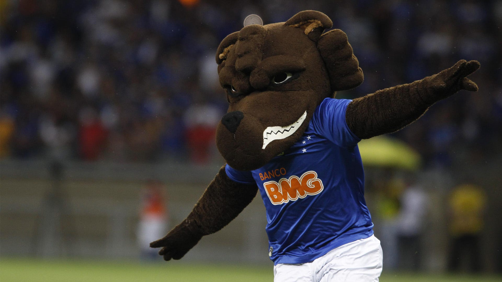
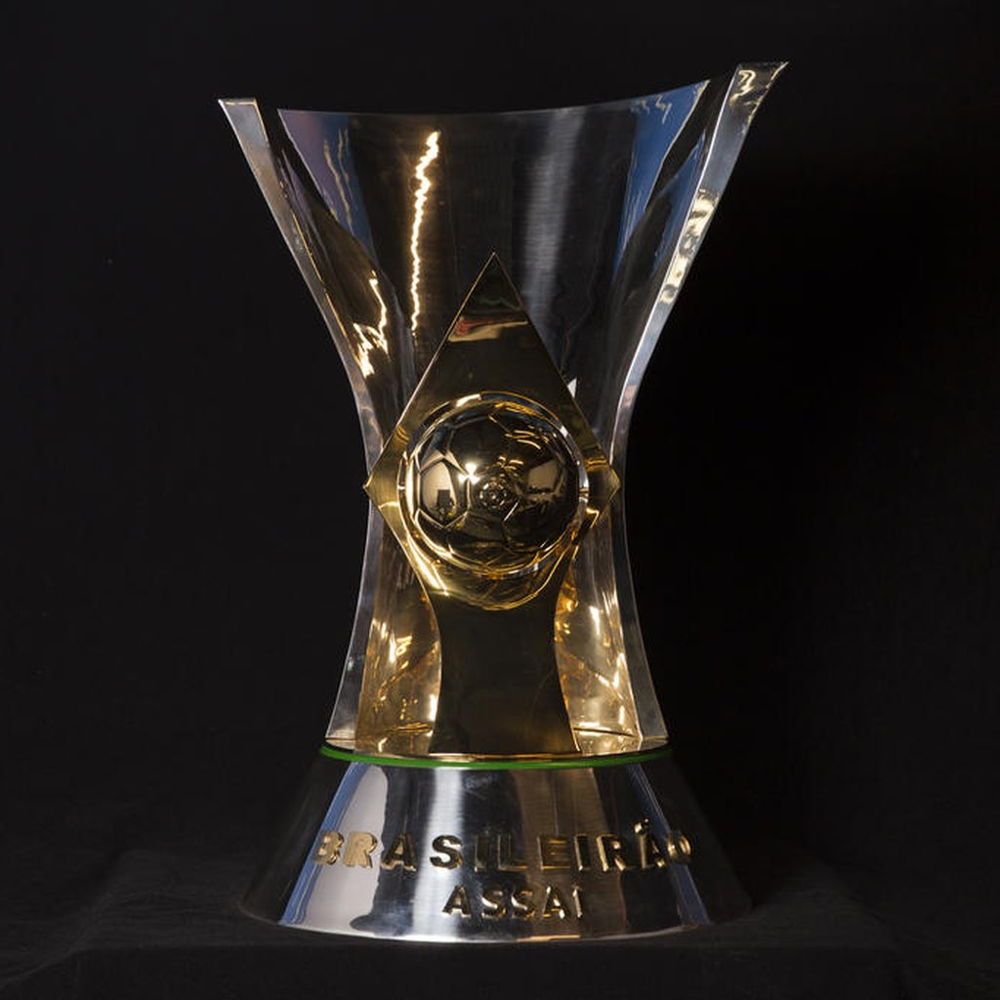
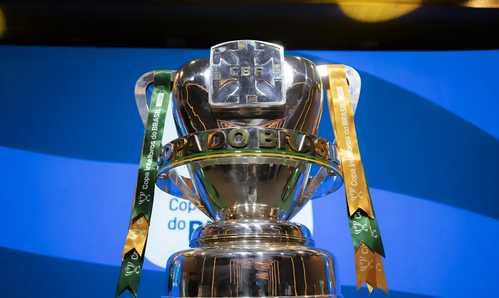
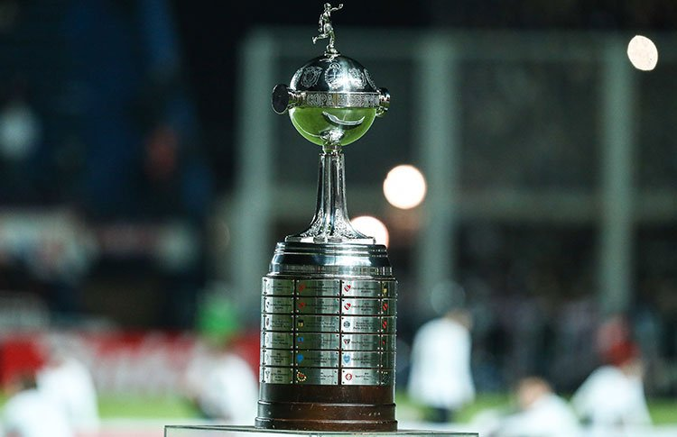
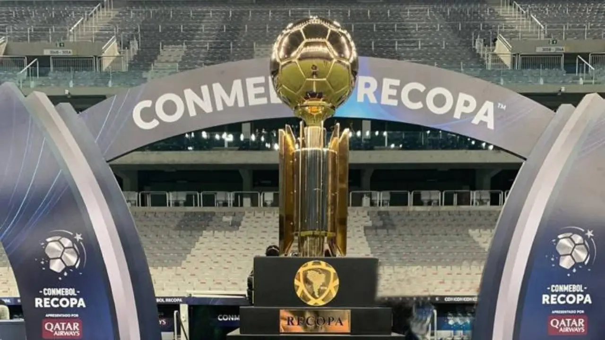

O Cruzeiro Esporte Clube
mais conhecido como Cruzeiro, é uma associação polidesportiva brasileira sediada em Belo Horizonte, Minas Gerais. É considerado um dos maiores clubes de futebol do Brasil e da América do Sul.Fundado em 1921 com o nome de Società Sportiva Palestra Italia, foi rebatizado para seu nome atual em 1942 - em referência ao Cruzeiro do Sul - por imposição do governo federal à época proibiu o uso no país de quaisquer símbolos de Alemanha, Itália e Japão, nações inimigas do Brasil no contexto da Segunda Guerra Mundial.
É um dos clubes mais populares do Brasil, tendo hoje a quinta maior torcida do país e a maior torcida do estado de Minas Gerais. Seu maior rival é o Atlético Mineiro, com quem faz um dos maiores clássicos do futebol brasileiro. Em menor grau, há também a rivalidade com o América Mineiro.
No domínio da saúde e medicina (e também veterinária), a nutrição é o estudo das relações entre os alimentos ingeridos e doença ou o bem-estar do homem ou dos animais.
Reconhecido como um dos maiores clubes do futebol brasileiro e internacional, o Cruzeiro foi duas vezes vice-campeão da Copa Intercontinental de clubes e tem no seu currículo continental dois títulos da Copa Libertadores da América, dois da Supercopa da Libertadores, um da Recopa Sul-Americana, um da Copa de Ouro Nicolás Leoz e um da Copa Master da Supercopa. No âmbito nacional, o time celeste detém quatro conquistas no Campeonato Brasileiro (uma delas como Taça Brasil) e seis da Copa do Brasil (atual recordista), sendo o único bicampeão seguido da competição. Em âmbito regional, foi bicampeão da Copa Sul-Minas e campeão da Copa Centro-Oeste, e em âmbito estadual possui 54 conquistas.
O Cruzeiro foi fundado no dia 2 de janeiro de 1921, por desportistas da colônia italiana de Belo Horizonte, com o nome de Società Sportiva Palestra Itália. As cores adotadas, como não poderia deixar de ser, foram as mesmas da bandeira italiana: verde, vermelho e branco. Na verdade a escolha do uniforme foi feita de acordo com as refinadas ideias do designer Arthur Lemmes, na própria capital mineira. Em 1922, o clube compra um terreno pertencente à prefeitura, onde hoje fica o Parque Esportivo do Cruzeiro. Em 23 de setembro de 1923, inaugura seu estádio, no Barro Preto, construído por jogadores e associados a maioria da colônia italiana de Belo Horizonte, composta em grande parte por operários de construção civil.
Em 1936, alguns dirigentes e ex-atletas lideraram um movimento de nacionalização do Palestra que levou o nome de Ala Renovadora. A intenção do grupo era mudar o nome do clube que já havia deixado de ser uma associação exclusiva da colônia italiana e por isso não havia mais sentido em se usar o nome Itália. A ideia sofreu resistências mas acabou ganhando aliados, recebendo, em seu primeiro projeto, o nome de "Renovadora Football Club", e alterando as cores de verde e vermelho para verde e branco, substituindo o vermelho do sangue derramado por italianos para o branco da paz. O Renovadora Football Club chegou a realizar alguns treinos com esse nome, porém, uma ala preconceituosa, que era maior parte da elitizada diretoria, rejeitou a ideia.
O hino oficial foi escrito por Jadir Ambrósio, que fez o hino do seu time de coração em 1965, ao participar de um concurso na Rádio Inconfidência. Na época, a diretoria cruzeirense, comandada pelo presidente Felício Brandi, conclamava os compositores mineiros a criarem um hino para o clube celeste que até aquele momento não tinha aquela composição. Ambrósio foi o vencedor e tocou pela primeira vez o hino que levou o nome Hino ao Campeão no programa do radialista Aldair Pinto !O mascote do Cruzeiro é raposa. Foi desenhada pelo chargista Fernando Pieruccetti (mais conhecido como Mangabeira) no ano de 1945, que se inspirou em Mário Grosso, ex-presidente do clube, conhecido por sua esperteza e astúcia no comando dos negócios do Clube e pelo fato da raposa ser o animal que se alimenta de galináceos, numa clara alusão ao seu rival regional. 
Conquistas
4 Brasileiros
6 Copas Do Brasil
2 Libertadores
1 Recopa Sul-Americana

Torcida